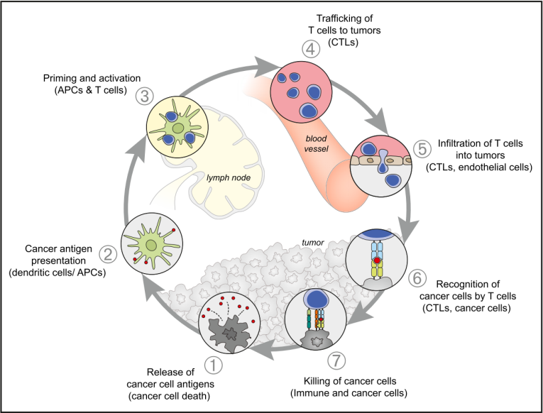
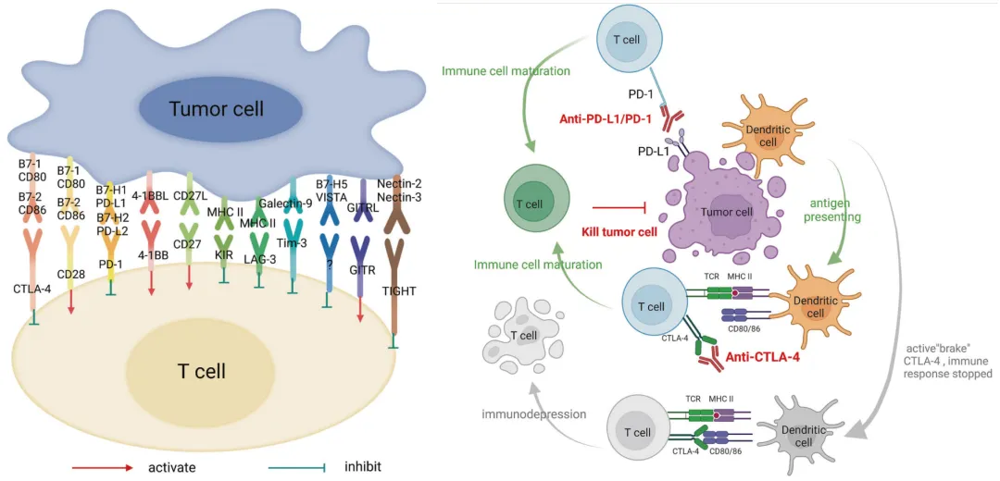
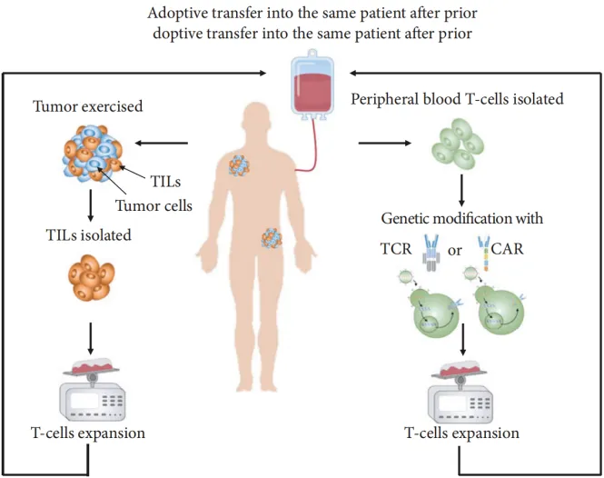
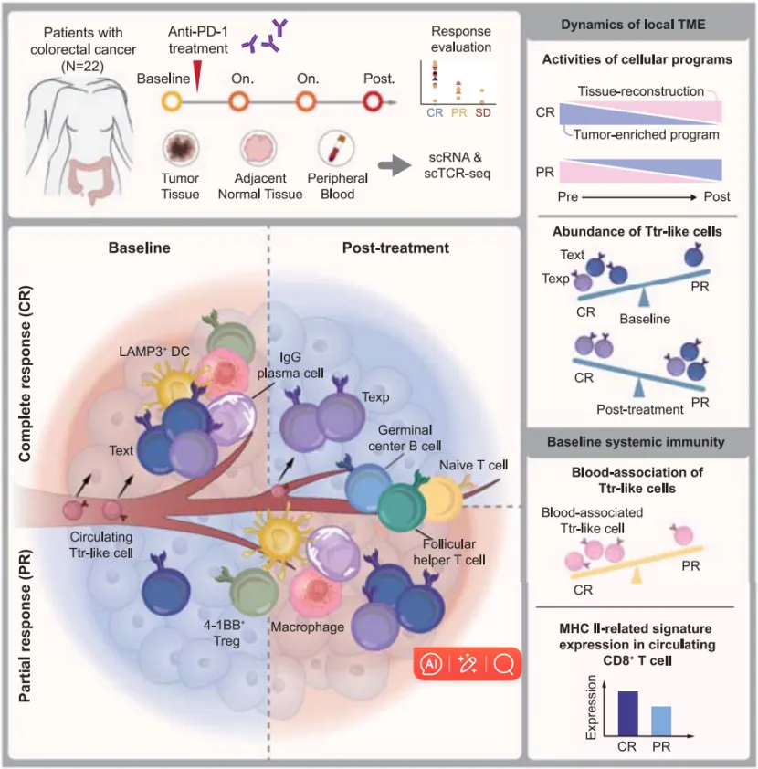
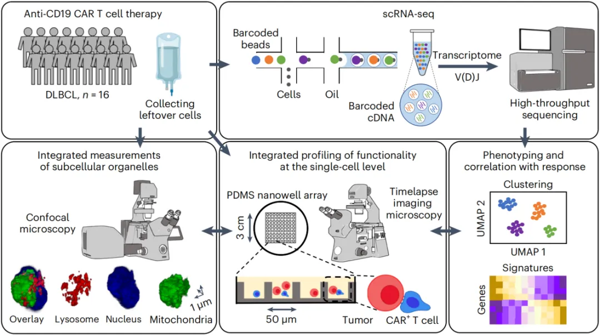
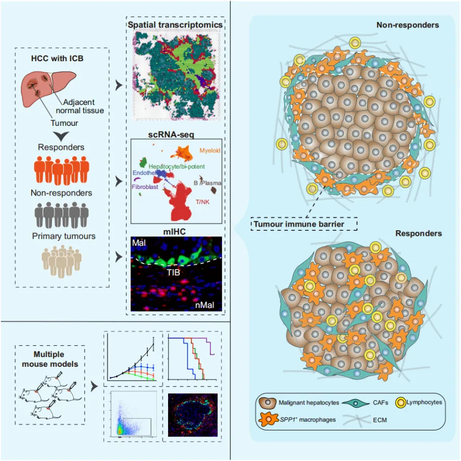

肿瘤免疫治疗新方向|单细胞-空间测序技术助力
原文：https://mp.weixin.qq.com/s?__biz=MzAwMzIzOTk5OQ==&mid=2247525650&idx=4&sn=a4dce54ffb48e4250ad2f7f7fb9d1957&chksm=9b3c1c42ac4b955480e83099bf5fff7600a7a9e95d12d5588780e2a854bf0de26e279b5d8e82#rd 合集：基金申报
导语 .
肿瘤、免疫，一直以来都是临床治疗和医学研究的主要方向，而将这两者结合在一起的肿瘤免疫治疗，近年来更成为临床研究的重中之重，历年国自然基金中标数均过千条。
肿瘤免疫治疗，即通过激活人体自身免疫系统来对抗肿瘤的创新治疗方法，具有强治疗活性、高靶点特异、低毒副作用等多种优秀特征，走在了肿瘤治疗的最前沿。
单细胞-空间测序，是一种能够在细胞和分子维度解析生物样本微观特征的技术，堪称生物大数据分析的显微镜。如何利用这些新技术，来解决肿瘤免疫治疗的新问题，需要我们了解它的基本概念、当前进展和热点方向。
11月21日下午 《国自然前沿-肿瘤免疫治疗课题设计经验及创新技术机遇分享》做了详细的介绍。
国自然宝典纸质版和视频回看可添加小寻领取：


我是小寻
01
肿瘤免疫逃逸和免疫治疗的基本概念与主要类型
肿瘤免疫治疗的前提，是免疫系统未能正确识别肿瘤细胞或免疫细胞未能被正确激活，即肿瘤细胞逃过了免疫系统的监察功能（免疫逃逸）。
1.1 免疫逃逸的概念： 是指肿瘤细胞通过多种机制逃避机体免疫系统（尤其是T、NK和Mφ细胞）的识别和攻击，从而得以在体内生存和增殖的现象。对应免疫识别的不同环节，肿瘤免疫逃逸大约包含以下几种机制。
■ 抗原识别失效： 包括肿瘤细胞本身的低抗原性、模拟自身抗原或新克隆快速变异等。
■ 免疫抑制环境： 由肿瘤细胞自身或挟持其它细胞，释放抑制性细胞因子，驱除免疫活化细胞、招募免疫抑制细胞（Treg、TAM、MDSCs等），创造出抑制性免疫微环境；免疫检查点分子（如PD-1）也属于此类。
■ 物理免疫屏障： 癌相关成纤维细胞（CAF）等诱导分泌大量细胞外基质（ECM），在癌灶外围形成一层厚重的物理屏障，阻挡免疫细胞进入。

图1 肿瘤免疫循环示意图[1]
针对以上几种肿瘤免疫逃逸机制，即形成了不同的免疫治疗策略。
1.1 免疫治疗： 如前所述，肿瘤免疫治疗的目标在于恢复或增强免疫系统对肿瘤细胞的识别与杀伤能力，比如识别或提高肿瘤细胞的免疫原性、消除免疫抑制环境并激活免疫细胞、突破物理免疫屏障等。比较常见的大概包括以下几类方法。
■ 免疫检查点抑制剂（Immune Checkpoint Inhibitor, ICI）： 或称免疫检查点阻断疗法（Immune checkpoint blockade, ICB）。肿瘤微环境（TME）中，T细胞表面受到抑制性免疫调节受体如CTLA-4和PD-1（称免疫检查点）的高度抑制，限制了其免疫激活和肿瘤杀伤能力；使用相应的抑制剂，可以消除（阻断）它们的免疫抑制作用，从而激活T细胞免疫应答、杀死肿瘤。

图2 免疫检查点阻断示意图[2]
■ 过继细胞免疫治疗（Adoptive Cellular immunoTherapy, ACiT）： 是将自体或异体免疫细胞分离，经体外激活或基因修饰后，扩增出足够量具有抗肿瘤活性的免疫细胞，回输给肿瘤患者，放大患者体内细胞免疫功能以提高抗肿瘤效果的治疗方法。最为人熟知的就是CAR-T疗法 ，即对T细胞表面受体TCR基因进行工程编辑，使其能够靶向识别并杀死患者肿瘤细胞；最新进展还有CAR-NK、CAR-Mφ、TCR-T等。

图3 过继细胞治疗流程示意图[3]
■ 肿瘤疫苗： 即利用合成肿瘤抗原或诱导肿瘤细胞裂解，来刺激机体产生特异性免疫应答，增强对肿瘤细胞的识别和清除能力。
■ 溶瘤病毒： 通过工程手段合成可以特异性识别肿瘤细胞的病毒制剂，靶向裂解肿瘤细胞，释放肿瘤相关抗原和肿瘤新生抗原，激活机体特异性免疫应答反应。
■ 细胞因子疗法： 细胞因子是肿瘤微环境中信号传递的关键蛋白，具有多效性；很多细胞因子，如TGF-β、IFN-γ、IL-2/12/15等，能够增强淋系或髓系细胞的细胞毒活性，如果能人工补充这些细胞因子并延长它们的存在时效，将会有效提高机体对肿瘤细胞的免疫响应能力。
02
肿瘤免疫治疗研究现状及文献案例
随着技术的进步和经济的发展，细胞免疫治疗作为一项前沿肿瘤治疗手段，近年来获得了持续的热情和关注，也取得了很多成果，多项免疫治疗药物已获批上市，如PD-1/PD-L1抑制剂纳武单抗（Nivolumab）、CTLA-4抑制剂伊匹单抗（Ipilimumab）、PD-1和CTLA-4“双免”药物卡度尼利（Camtinib）、CAR-T制剂Kymriah等，为晚期癌症患者带来了新的希望。
然而，仍有相当比例的患者对现有疗法响应较差或出现耐药，提示我们进一步探索肿瘤免疫治疗机制，提高疗效响应、降低毒副作用，当是题中之义。单细胞-空间测序作为当前分辨率最高的生物检测技术，辅助肿瘤免疫治疗的临床和科研探索，涌现了大量优秀的研究成果。
文章案例01：单细胞时空分析解码结直肠癌免疫治疗响应的细胞动力学[4]
这篇文章2024年7月发表于 Cancer Cell ，是北京大学张泽民教授团队领衔的最新研究成果。该研究旨在扩大免疫检查点阻断疗法（ICB）在结直肠癌（CRC）中的疗效响应，文章选择了来自22名接受抗PD-1治疗患者的多个连续时间点样本，进行单细胞转录组联合TCR测序分析，绘制了CRC患者局部和全身的免疫演变。具体而言，耗竭性T细胞（Tex）或肿瘤反应性CD8+ T细胞（Ttr-like）与治疗效果密切相关，其中Tex在PD-1阻断后与多种肿瘤富集的细胞类型显示出相关的比例变化；而肿瘤中血液相关Ttr-like细胞则呈现较少耗竭表型，并且其较高丰度与更好的疗效相关；最后，基线时循环CD8+ T细胞中较高的MHC II相关特征与优秀的治疗响应有关。
这篇文章的实验设计（CR/PR/耐药患者+连续多个时间点取样）、检测方法（scRNA-seq+scTCR-seq）和分析角度（T细胞耗竭、肿瘤反应性、循环 T细胞免疫特征的疗效预测）等，都是十分经典的方案，值得借鉴。

图4 CRC患者ICB治疗响应差异机制和疗效预测模型[4]
文章案例02：通过动态多维单细胞图谱鉴定出一种弥漫性大B细胞淋巴瘤临床有效的CAR - T细胞亚群[5]
这篇2024年5月由Ali Rezvan等发表于 Nature Cancer 上的文章，主要介绍了一种称为TIMING的显微成像技术，用于评估大B细胞淋巴瘤Axicabtagene ciloleucel治疗（吉利德/Kite开发的抗CD19 CAR-T细胞疗法）过程中的细胞存续、运动能力和肿瘤杀伤活性。结合scRNA-seq技术，识别出一种多功能CD8+ T细胞（CD8-fit T），证实其治疗前即存在于输注物中、治疗后稳定存活、可以在实体肿瘤中扩增和迁移、并具备持续的肿瘤细胞杀伤作用。
监控CAR+/- T细胞比率、激活状态、存续时间、扩增/迁移能力及其与肿瘤微环境组分的相互作用动态，以预测治疗效果，进而构建个体化CAR-T制剂，是当前进行过继细胞治疗研究的经典思路。

图5 Anti-CD19 CAR-T治疗DLBCL的细胞行为动态模型[5]
文章案例03：肝细胞癌微环境中决定免疫治疗效果的肿瘤免疫屏障的识别[6]
这篇 J Hepatol. 上的文章发表于2023年4月，主要完成者是中国科学技术大学刘连新教授团队和上海交通大学叶幼琼教授团队。文章关注点是ICB治疗肝细胞癌（HCC）的响应率和耐药机制。除了TME中普遍的免疫抑制状态，由肿瘤相关巨噬细胞（TAM）、癌症相关成纤维细胞（CAF）等共同构建的肿瘤边界纤维化屏障结构，也是牵制ICB治疗效果的重要原因之一。解析肿瘤免疫屏障形成的细胞分子机制，对改善ICB治疗效果，应具有相当的指导作用。
具体来说，研究采集了抗PD-1治疗HCC患者（有应答/无应答）的配对肿瘤与邻近正常组织，进行单细胞和空间转录组测序分析，观察到低氧条件诱导SPP1+巨噬细胞和CAF相互作用，在癌灶周边形成一种限制（活化）免疫细胞向肿瘤核心渗透的特殊空间结构，称为肿瘤免疫屏障（TIB） 。构建小鼠肿瘤模型，阻断或巨噬细胞特异性敲除SPP1，可诱导CAF浸润减少和CTL作用的增加，显著增强了抗PD-1治疗的效果。
本文使用scRNA-seq+ST-seq技术，首次从微观视觉层面直接呈现了这种肿瘤屏障结构的产生及其周边的细胞定位，实现了检测精度和展现形式的突破。

图6 ICB治疗抵抗HCC患者的肿瘤免疫屏障结构[6]
03
单细胞-空间技术助力肿瘤免疫治疗研究的
新方向和新热点
从前述对肿瘤免疫治疗主要方法和研究案例的介绍中可以看出，当前关注的主要还是如何提升治疗响应率和适用范围，减少耐药抵抗和毒副作用。对此，除了进一步提高研究深度，增加效验癌种、扩大患者范围，尝试更多新药和多药联合方案以外，近期应该还有一些新的动态值得关注一下。
■ 肿瘤癌变谱系：癌症相关驱动基因的突变促进肿瘤生长复发，但我们对驱动基因突变的时间和随后的克隆动力学的了解是有限的。
一句话重点：新生突变；肿瘤新抗原
■ 三级淋巴结构：在非淋巴免疫器官中形成的异位淋巴结构，由中央B细胞和外周T细胞、DC等细胞组成，在肿瘤、感染等慢性炎症反应中起着重要的免疫响应和指示作用。
一句话重点：在癌症治疗方面，我们已经围着T细胞转了一二十年了
■ 肿瘤-环境互作：很多类型肿瘤的发病和预后与肿瘤微环境中的微生物有关，如肝癌HBV、胃癌幽门螺杆菌等。
一句话重点：微生物-宿主细胞互作；肿瘤“胞内菌”
单细胞转录组测序（scRNA-seq）、单细胞免疫组库（scTCR/BCR-seq）、单细胞空间转录组（SeekSpace®），作为当前领先的研究手段，有着极高的检测分辨率和颗粒度，可以提供具体到每一个细胞的身份功能、基因表达、信号网络，或者（T/B）细胞的克隆扩增动态，进而数字化重建整个由肿瘤、辅助、免疫细胞和各种细胞因子组成的三维空间结构，直观、具体、精细地展现“免疫检查-肿瘤逃逸-再识别 ”这场猫鼠游戏中关键的细胞状态和靶点分子，为我们明确疗效机制、开发新的药物和治疗策略，提供最为强大的工具。
参考文献：
[1] Daniel S. Chen, and Ira Mellman. (2013). Oncology Meets Immunology: The Cancer-Immunity Cycle.Immunity,39.http://dx.doi.org/10.1016/j.immuni.2013.07.012
[2] Wang DR, Wu XL, Sun YL. (2022). Therapeutic targets and biomarkers of tumor immunotherapy: response versus non-response. Signal Transduct Target Ther, 7(1):331. https://doi.org/10.1038/s41392-022-01136-2
[3] Yang L, Ning Q, Tang SS. (2022). Recent Advances and Next Breakthrough in Immunotherapy for Cancer Treatment. J Immunol Res, 2022:8052212. https://doi.org/10.1155/2022/8052212
[4] Chen, et al. (2024). Spatiotemporal single-cell analysis decodes cellular dynamics underlying different responses to immunotherapy in colorectal cancer. Cancer Cell, 42:1268–1285. https://doi.org/10.1016/j.ccell.2024.06.009
[5] Ali Rezvan, et al. (2024). Identification of a clinically efficacious CAR T cell subset in diffuse large B cell lymphoma by dynamic multidimensional single-cell profiling. Nature Cancer, 5:1010–1023. https://doi.org/10.1038/s43018-024-00768-3
[6] Liu, et al. (2023). Identification of a tumour immune barrier in the HCC microenvironment that determines the efficacy of immunotherapy. J Hepatol., 78(4):770-782. https://doi.org/10.1016/j.jhep.2023.01.011
向上滑动阅览
关于寻因生物

北京寻因生物科技有限公司（简称寻因生物）——专注单细胞测序技术自研、创新的国产技术平台。秉承“用技术温暖生命，预见未来”的企业愿景，致力成为您身边最值得信赖的单细胞创新合作伙伴。
寻因生物于2018年启动研发，历时6年，已完成覆盖单细胞仪器、实验、建库、分析全链条自研产品20 余项，提供单细胞科研全周期服务&特殊样本解决方案50 余种。
专注单细胞表达谱功能的单细胞3’转录组 产品及助力免疫方向研究的单细胞免疫组 产品，已实现与国际性能比肩。继而创新推出了真·单细胞分辨率的单细胞空间转录组； 实现突变、可变剪切、lnc等更多信息更多物种信息检出的单细胞全序列转录组 以及实现FFPE样本更长RNA覆盖的单细胞FFPE转录组 等创新技术，从而覆盖肿瘤、免疫、感染、疾病发生发展和发育分化等研究方向。
2023年，寻因生物作为牵头单位的“十四五”国家重点研发计划“前沿生物技术”重点专项成功立项。北京市多次颁发授予寻因生物专精特新中小企业、高新技术企业证书、中关村高新技术企业等荣誉认证。
寻因生物致力于单细胞技术普适化标准和应用，积极建立全球化视野，现已与中国大陆、中国香港、澳大利亚、德国、荷兰、法国、西班牙、俄罗斯等全球十余个国家地区，1000+ 研究单位建立合作。
完成100+ 单细胞全体系知识产权布局，22 项自主知识产品体系搭建，9项产品获得了欧盟数据EUDAMED注册认证。技术平台获得涵盖医疗器械、质量、环境安全、职业健康和信息安全的五项管理体系认证。
寻因生物，通过不懈努力将管理体系达到国际标准，持续深耕创新，有能力不断提供稳定、高标准的产品和服务，为生命科学工作者提供更优科研工具，助力项目开花结果。
END